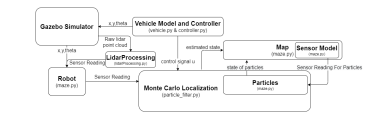
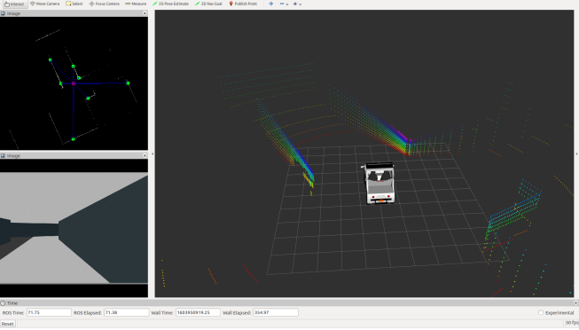
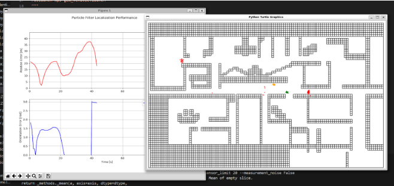
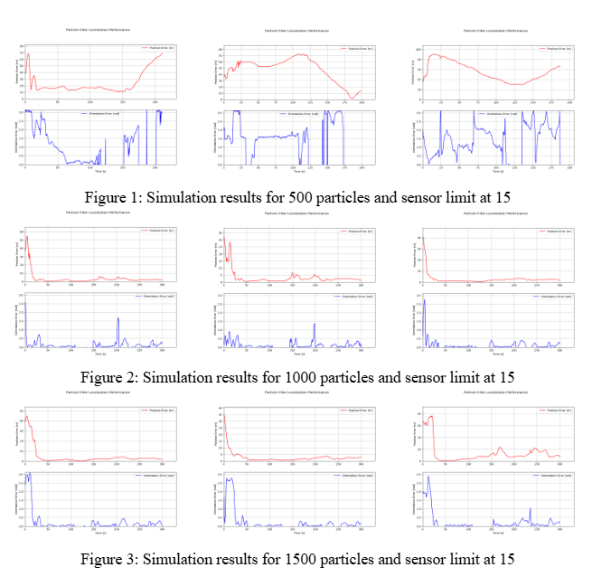

Obstacle Detection and Avoidance Using Basic Perception
Project Overview
In this project, I implemented a Monte Carlo Localization (MCL) algorithm using a particle filter to localize a robot in a simulated indoor environment (ECEB building) using LiDAR sensor data. The simulation was built on ROS Noetic and Gazebo, and the system required interpreting LiDAR measurements, modeling robot dynamics, and tuning various parameters to evaluate localization performance under different configurations.
Key Contribution
Sensor Model & Directional Expansion:
Extended the default LiDAR model from 4 to 8 measurement directions and adjusted both the vehicle and particle sensor models accordingly to improve spatial awareness.
MCL Implementation & Parameter Tuning:
Modified and tuned the runFilter() function in particle_filter.py to support motion updates, Gaussian weight calculation, and multinomial resampling of particles. Evaluated the impact of varying particle count (500–1500), sensor limit (15–25), and measurement direction count.Simulation Design & Data Collection:
Set up diverse scenarios: modified sensor range, noise injection, and ambiguous initial positions. Developed Python tools to extract key metrics: average position error, orientation error, iterations per second, and total iterations. Recorded simulation videos and visualized convergence behavior across setups. 
Results and Impact
We evaluated how particle count, sensor range, measurement directions, and initial distribution impact localization performance. Increasing particles from 500 to 1000 significantly improved accuracy, but further increases added computational cost with minimal gain. Extending the sensor limit and number of measurement directions enhanced convergence by providing more information but introduced slight delays due to ambiguity from distant reflections. Localizing from the top-right quadrant led to faster convergence and lower error, while starting in symmetric hallways caused slowdowns due to perceptual aliasing. Measurement noise increased variability, whereas noise-free runs yielded smoother, more accurate estimates.
